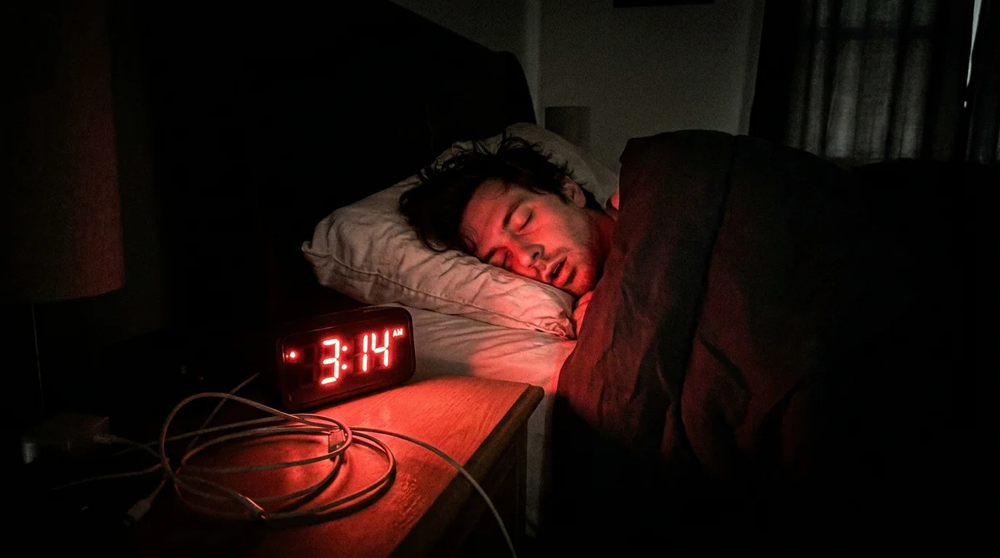
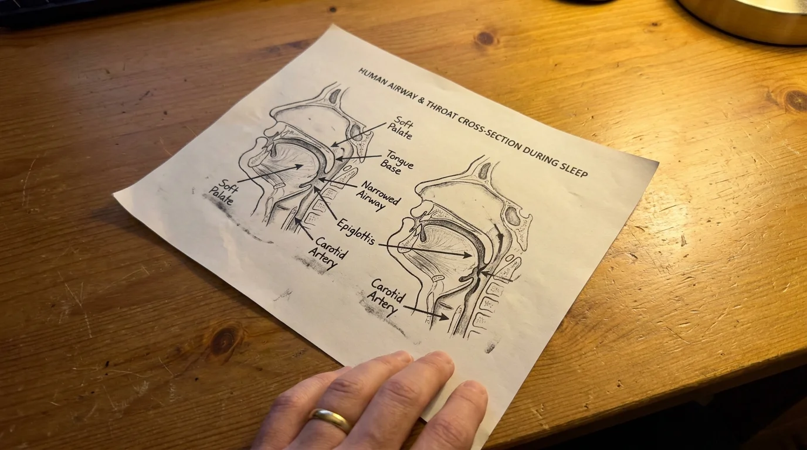
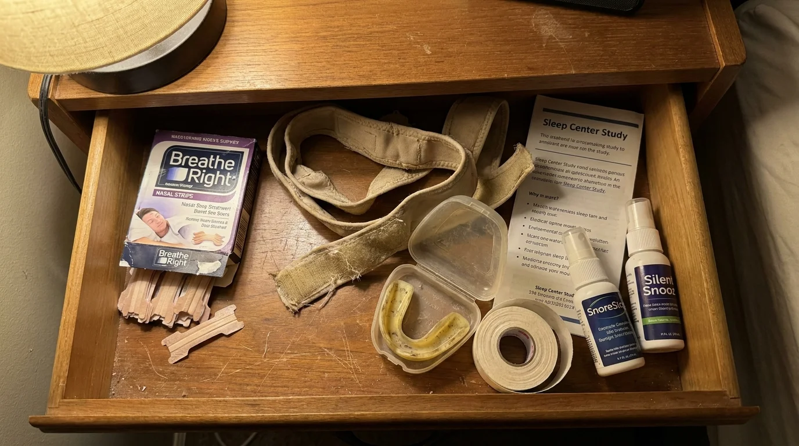
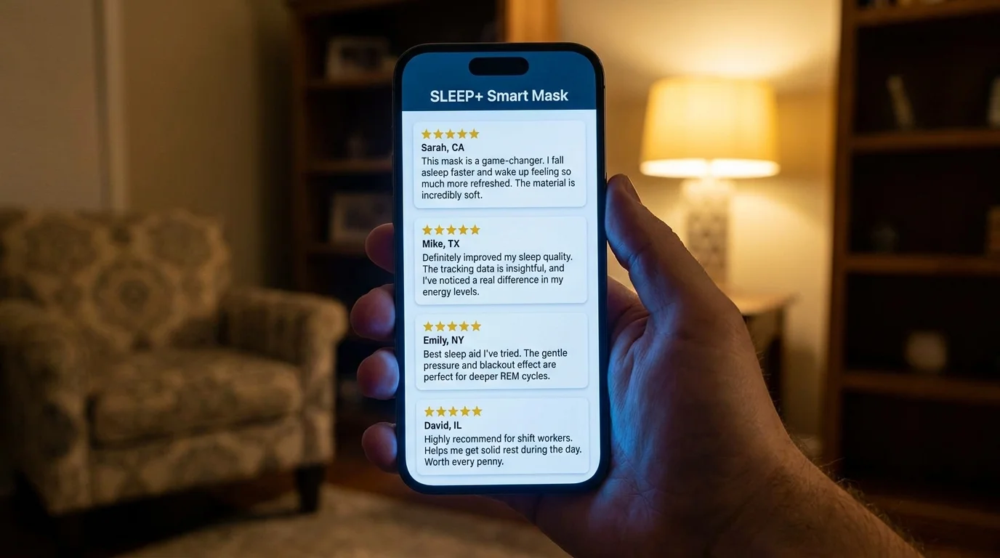
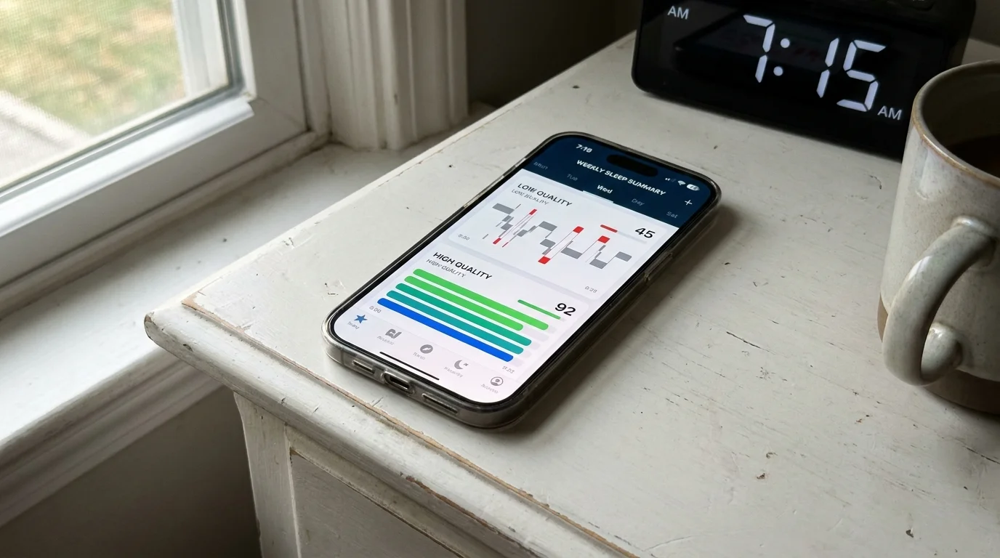

After 30 Years Of Treating Snorers, Here's The Silent Damage Happening Inside Your Body Every Night (And How To Stop It)

Most chronic snorers do not understand what is happening inside their body while they sleep.
They know the noise is loud. They know their partner is unhappy. They have been told it is a quality-of-life problem and they have come to think of it that way. A quality-of-life problem is something you tolerate.
What they have not been told, and what nobody on the retail shelf has any incentive to tell them, is that the noise is the audible byproduct of a process that is causing measurable damage to the cardiovascular and neurological systems every single night.
I have been a naturopathic physician for thirty two years. I have followed thousands of chronic snorers across that span. The patients who took the noise seriously when they were forty are unrecognizable in good ways at sixty. The patients who did not take the noise seriously when they were forty are now sitting across from me at sixty trying to understand why their resting blood pressure has been climbing for five years and why the cognitive sharpness they had at fifty is no longer there.
I am writing this for the patient who is forty. Or fifty. Or sixty and has been quietly hoping the snoring is harmless. It is not.
What Is Actually Happening In The Throat Every Night
When a snorer falls asleep, the soft tissues at the back of the throat relax. In a healthy airway those tissues stay open. In an inflamed or congested airway they swell, accumulate mucus, and partially collapse inward. When air pushes through that narrowed passage it forces the tissues to vibrate hundreds of times per minute.
That is the snore.
The vibration itself is not a neutral event. It is a mechanical stress applied repeatedly to soft tissue, blood vessels, and nerves located in one of the most sensitive regions of the body, hour after hour, night after night, year after year.
Most patients have never had this explained to them. They were given a mouthguard. They were told it would help. The mouthguard did not work because it does not address what is happening in the throat. The vibration continued. So did the damage.

What The Vibration Is Doing To Your Arteries
The carotid arteries are the major vessels carrying oxygenated blood to the brain. They run directly alongside the soft tissue at the back of the throat that vibrates when you snore.
That proximity is not a small detail. It is the entire reason chronic snoring has been linked in published research to thickening of the carotid artery walls, a condition called carotid intima-media thickening, which is itself an early warning marker for stroke.
The mechanism is direct. Mechanical vibration applied repeatedly to the wall of an artery causes microscopic injury. Microscopic injury triggers inflammatory repair. Inflammatory repair, when it occurs night after night for years, contributes to the slow buildup of plaque and the gradual stiffening of the arterial wall.
The patient who has been snoring chronically for fifteen years is not the same person, structurally, as the patient who has not. The vessels carrying blood to their brain have been quietly remodeled by a process that produces no symptom the patient can feel.
This is not theoretical. This is documented. It is one of the reasons I no longer let patients in my office treat their snoring as a noise problem.
"The patient who has been snoring chronically for fifteen years is not the same person, structurally, as the patient who has not. The vessels carrying blood to their brain have been quietly remodeled."
What It Is Doing To Your Heart And Blood Pressure
Each time the airway narrows enough during sleep to cause an obstructive event, the body responds with a brief surge of stress hormones. Adrenaline. Cortisol. Heart rate climbs. Blood pressure spikes. The body returns to baseline within seconds, but the spike is real and it has occurred.
A patient with severe chronic snoring may have hundreds of these events per night. Thousands per week. Hundreds of thousands per year.
The cardiovascular system is not designed to absorb that volume of stress events without consequence. Resting blood pressure climbs. The heart muscle thickens in response to the sustained workload. The risk of arrhythmia, atrial fibrillation, and cardiovascular events rises in step.
The patient feels none of this while it is happening. They wake up. They feel a little tired. They blame the tiredness on stress, age, work, anything other than the actual cause. The blood pressure number on their next physical is a little higher than it was a year ago. They are told to cut back on salt.
The snoring is never mentioned in that conversation, because the snoring has been categorized as a quality-of-life issue rather than a cardiovascular one.
What It Is Doing To Your Brain
Sleep is not a passive state. It is an active, structured process during which the brain performs essential maintenance, including the consolidation of memory and the clearance of metabolic waste products.
Chronic snoring fragments that process.
Even when a snorer believes they have slept eight hours, their actual time in restorative deep sleep is significantly reduced because the body is repeatedly nudged toward shallower stages by the airway obstruction. The brain does not get a full repair cycle.
Over years, this accumulates. Patients who have been snoring chronically for a decade or more frequently report difficulty concentrating, slower word recall, and a general sense that their cognitive sharpness is not what it once was. They attribute it to age. Some of it is age. Most of it, in my clinical experience, is sleep fragmentation that has been compounding for years.
Published research has begun connecting chronic snoring and obstructive sleep events with elevated risk of cognitive decline and earlier onset of memory-related conditions. The connection is mechanistic. A brain that is not getting full repair cycles for years cannot maintain its function indefinitely.
Why Most Treatments Have Not Stopped Any Of This
The standard interventions sold to chronic snorers were not designed to stop the damage. They were designed to reduce the noise.
Nasal strips open the nostrils. The throat continues to vibrate.
Mouth tape and chin straps force the mouth closed. The throat continues to vibrate.
Mouthguards pull the jaw forward. The throat tissue is still inflamed, still mucus-laden, still partially collapsing. The vibration is partially reduced, then frequently returns within months.
CPAP machines force pressurized air down the throat. Effective when used. Between thirty and fifty percent of patients prescribed one stop using it within months because of discomfort, claustrophobia, or noise.
Surgery removes or stiffens soft tissue. Painful recovery. Significant cost. The body re-inflames over time.
None of these reduce the inflammation in the throat that is the actual driver of the vibration. As long as that inflammation is present, the airway will narrow, the tissue will vibrate, and the damage to the carotid arteries, the heart, and the brain will continue.

What Has To Change For The Damage To Stop
The intervention has to address the throat directly. It has to reduce the inflammation in the soft tissue. It has to clear the mucus that has accumulated in the airway. It has to support the natural opening of the pharyngeal muscles that should keep the airway open during sleep but instead collapse inward.
If those three things are addressed, the airway stays open. The tissue stops vibrating. The mechanical stress on the carotid arteries stops. The micro-arousals stop. The fragmented sleep stops. The brain begins getting full repair cycles again.
Once the airway is clear, every downstream consequence I described earlier in this article begins to reverse. Resting blood pressure tends to drop. The two-o'clock fatigue lifts. The cognitive sharpness returns. The arterial damage that has not yet calcified begins to heal.
I am not going to claim that twenty years of arterial damage reverses in a week. It does not. What I will tell you, having watched this in patients across decades of practice, is that the trajectory changes immediately. From the first night the throat is no longer vibrating, the body stops accumulating new damage and starts repairing what is repairable.
The next question is what intervention does this.
The Formula
The intervention is a natural oral spray called SnoreStop. It is the only formula I have observed in three decades of practice that addresses all three layers of the snoring mechanism at the source.
Its principal active ingredient is Nux Vomica, a compound used in naturopathic medicine for over a century. Applied to the soft tissue at the back of the throat, Nux Vomica supports the natural opening of the constricted pharyngeal muscles, the precise muscles that collapse inward during snoring and create the vibration. It is the primary mechanism. Without it, no formula targeting the throat can work.
Around Nux Vomica sits a small group of complementary natural ingredients, each chosen to address a specific layer of the problem.
Belladonna, to reduce inflammation in the throat tissue.
Kali Bichromicum, to clear the accumulated mucus that narrows the airway.
Cinchona, to support the natural rest cycle so the soft tissue does not over-relax during sleep.
Together these four ingredients address every layer of the snoring mechanism. The collapsed muscle tone. The inflammation. The mucus. The compromised sleep cycle that compounds all three.
The formula was put through a published double-blind, placebo-controlled clinical study, the standard of evidence required of pharmaceutical interventions. The results were significant enough to be cited in the naturopathic literature for decades since.
How It Is Used
Two sprays under the tongue. Two sprays at the back of the throat. Immediately before bed.
The full ritual takes under ten seconds. There is no device. No prescription. No fitting. No specialist referral. No machine on the nightstand.
Most patients report a measurable change on the first night. The majority reach full effect within five to seven nights of consistent use. A small percentage take up to two weeks.
It has been used by over 250,000 people in the United States since 1995. It is manufactured in FDA-regulated, GMP-certified facilities. It is fully natural and non-habit forming.
Why You May Have Never Heard Of It
This is the part most patients ask me about, and the answer is uncomfortable.
For nearly thirty years, SnoreStop was available over the counter in pharmacies across the country. It sat on the same shelf as the strips and the sprays that do not work, at roughly the same price point.
That changed.
The pharmaceutical industry generates billions of dollars per year from snoring. CPAP machines, custom mouthguards, sleep studies, surgical procedures. A natural formula sold under fifty dollars that addresses the root cause is, to put it bluntly, a problem for that revenue model.
Pressure has been building for years to remove SnoreStop from over-the-counter shelves. That pressure has succeeded. You can no longer find SnoreStop in most retail pharmacies. It is now available only directly from the manufacturer, through their official website.
I am careful with my words here. I am not making accusations. I am telling you what I have observed across three decades in this profession. The most effective natural treatments tend to be the hardest to find, and the reasons are not always clinical.
The company has chosen to continue selling it directly, at the original price, through their website. They have not raised the price. They have not changed the formula. They have not made it harder to access for the patients who need it. They have simply moved it to where they can still legally sell it.
On Cost
A custom mandibular advancement device costs between fifteen hundred and four thousand dollars. A CPAP system runs eight hundred to fifteen hundred dollars before recurring mask and tubing replacements. A sleep study can total one to three thousand. Surgery is four to six thousand and carries genuine clinical risk.
SnoreStop is under fifty dollars.
The price reflects the supply chain it does not have to pass through. SnoreStop does not require a dentist, an ENT, an orthodontist, a sleep clinic, or insurance pre-authorization. Price has nothing to do with effectiveness.
| Solution | Cost | Time To Get | Comfort |
|---|---|---|---|
| Surgery | $4,000 – $6,000 | Months + recovery | High risk |
| Sleep study + CPAP | $1,800 – $4,500 | 6–8 weeks | Low (50%+ abandon) |
| Custom mouthguard | $1,500 – $4,000 | 4–8 weeks | Often painful |
| OTC mouthguard | $80 – $300 | Immediate | Uncomfortable |
| SnoreStop | Under $50 | Immediate (online) | No device |
Patient Outcomes
The reviews below are unsolicited and were submitted directly by verified buyers.
"I had tried everything. Three mouthguards, two surgeries on my soft palate, a CPAP I never used. My wife had been sleeping in the guest room for two years. First night with SnoreStop she came back to our bed. Three months later she has not left."
"I bought it for my husband. He was skeptical because it seemed too easy. Five days in he turned to me at breakfast and said he could not remember the last time he woke up not feeling like he had been hit by a truck. That was eight months ago. He uses it every single night."
"Thirty years of snoring. My grown children used to joke about it. After one week on SnoreStop my wife recorded me sleeping just to prove to me it was actually working. Total silence on the recording. I cried a little. I am not embarrassed to say it."

What Recovery Looks Like
The change at three months extends well beyond the absence of snoring.

The face at the three-month follow-up is different. The bags under the eyes have reduced. The skin tone has improved. Many patients have lost weight without trying, because the body is finally completing its overnight repair cycle uninterrupted.
Cognitive sharpness returns. Patients report being more present at work and more patient with their families. Resting blood pressure frequently drops at the next physical, sometimes enough that their primary physician notes it without being prompted. The two-o'clock fatigue most chronic snorers have lived with for years tends to lift entirely.
The partner is a different person at the three-month mark as well. Quietly accumulated resentment has nowhere left to live.
The Guarantee
🟢 The SnoreStop 30-Day Guarantee
"Either it works or it's completely free. Two outcomes only. Your sleep returns, or your money does. There is no third option."
Every bottle of SnoreStop is backed by a full thirty-day money-back guarantee. If your snoring does not improve, return it. No questions, no forms, no phone calls. Full refund.
There are not many interventions in medicine that are mathematically impossible to lose. This is one of them.
Closing Note
Most chronic snorers I have treated were unaware until their first appointment with me that the noise was indicating something happening underneath. They had spent years thinking of it as a quality-of-life issue. Once they understood it was a structural one, they wanted to do something about it that day. Most of the time, they had already tried multiple interventions that had not worked, and the relief on their faces when I described a formula that addressed the actual mechanism was visible.
If you have been snoring for a decade, twenty years, thirty years, you cannot recover the years that have already passed. You can stop the next year from being added to that total.
The trajectory of cardiovascular and cognitive damage from chronic snoring is not fixed. It is being created every night the throat continues to vibrate. The night the throat stops vibrating, the trajectory changes.
I have written this article because most patients do not learn this until their physical reveals something they did not see coming, and by then we are managing damage that did not need to be there. The thirty-day guarantee makes the cost of finding out whether SnoreStop works for you mathematically zero. The cost of waiting another year is not zero.
The right time was a long time ago. The next best time is the next bottle on your nightstand.
— Dr. Kenneth Hart, ND